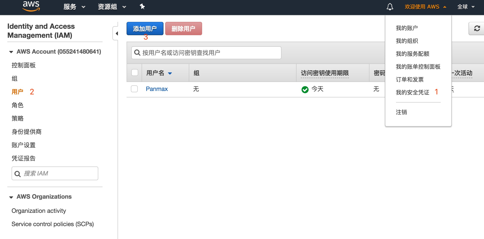
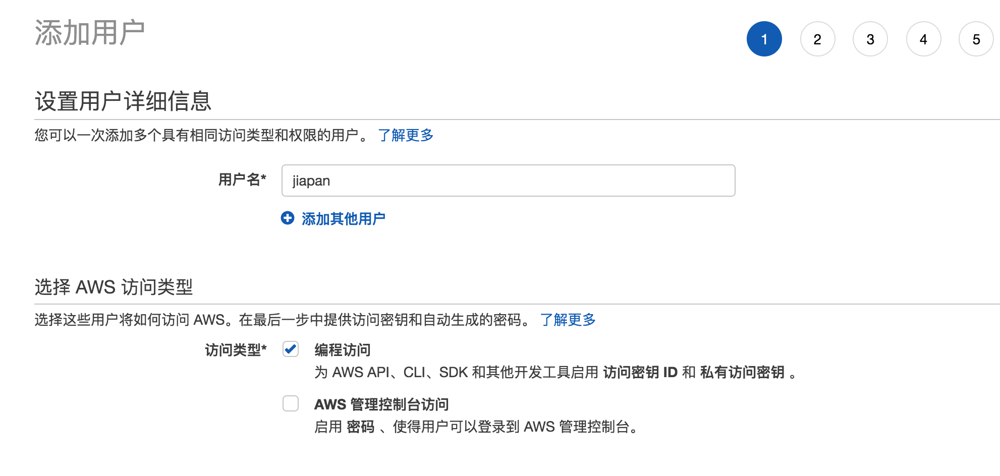
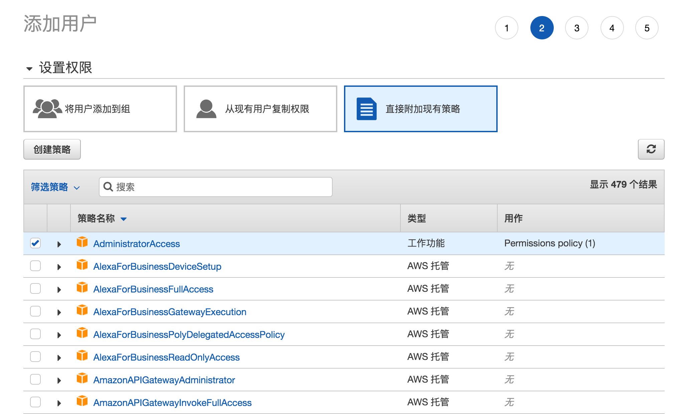
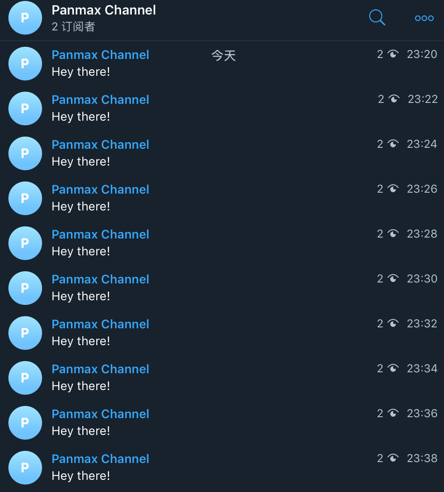

创建一个 Telegram 机器人，定时发送消息，并部署到 AWS Lambda。
AWS Lambda 是一项计算服务，可使你无需预配置或管理服务器即可运行代码。
我们要做什么？
- 创建一个 Telegram 机器人
- 自动发送日常信息
- 把它部署到 AWS Lambda
需要准备什么？
- 一个 Telegram 帐号
- Python 3.6
- Node.js
- 一个 AWS 帐号
AWS Lambda 可以在一定配额内免费使用，所以需要避免发送大量请求。
AWS Lambda 定价方案如下：

创建机器人
待办清单上的第一件事是创建一个机器人，遵循 Telegram 官方说明：
- 在 Teletram 中搜索用户
@BotFather。 - 发送命令
/newbot并为你的机器人指定name和username。 - 拿到 token 并记录在一个安全的地方，后边会用到。
现在机器人准备好了，开始编写代码。
准备部署设施
有很多部署 Lambda 的方法，我准备使用 serverless 框架，所以我们先来安装它：
1 | $ npm install serverless --global |
Serverless 的文档中提供了一些范例，还支持生成模板，像下边这样：
1 | $ serverless create --template aws-python3 --path scheduled_telegram_bot |
执行这个命令后，会创建出一个 scheduled_telegram_bot 目录，并已经生成了 3 个文件：.gitignore，serverless.yml 和 handler.py。
serverless.yml 文件用来描述：部署什么、何时运行、如何运行。 handler.py 文件包含将要运行的代码，所以我们先来编写它。
编写代码
我们将使用是一个封装好的包来调用 Telegram 的 API：python-teletram-bot，创建一个新的文件 requirements.txt 写入：
1 | python-telegram-bot==12.2.0 |
我们需要在程序中导入这个库，不过后边我们会遇到一个问题：由于 python-telegram-bot 不是 AWS Lambda 所提供的标准库，因此我们在部署时需要同时包含这个包中的文件。
所以我们后边会在本地安装这个包的所有内容。
1 | pip install requirements.txt --target=. |
现在让我们来定义一个发送消息的函数，打开 handler.py 修改内容如下：
1 | import telegram |
你需要把 CHAT_ID 修改为你想让机器人互动的群组、频道或者会话的 ID。获取 ID 的方法如下，我以频道为例：
首先创建自己的频道，将机器人拉入频道并设置为管理员，随意在频道内发送一个消息。
添加 GetIDsBot，并将上边发的那条消息转发给这个机器人，它会返回这个频道相关信息：
1 | 👤 You |
这样可以得到我所在这个频道的 ID 为 -1001156324531。
部署定义
现在我们来定义如何运行我们的代码。
编辑 serverless.yml：
1 | service: scheduled-telegarm-bot |
这里我们告诉了 AWS 我们所需要的运行环境，并且让它从我们的环境变量中获取 Telegram token，这样我们就不需要把 token 硬编码到代码中了。
最后我们还定义了一个定时器，声明每两分钟触发一次这个函数。当然，定时器有很多选项，通过这个文档可以了解更多配置方式，比如每小时或者每周一发送消息。
汇总
我们已经准备好了所有需要的东西。
好吧，准确来说是几乎所有的东西。我们还需要获取 AWS 的凭证，然后和 token 一样，在部署前设置为环境变量，获取凭证步骤如下：
通过 AWS 的控制台：
进入 我的安全凭证 - 用户 - 添加用户

设置用户名并选择编程访问

下一步：选择直接附加现有策略 - AdministratorAccess

下一步会来到添加标签页，直接点击下一步，确认信息无误后点击 创建用户，将 访问密钥 ID 和 私有访问密钥 拷贝并存放起来。
现在，让我们把 AWS 凭证和 Telegram token 导出到环境变量。打开终端，输入：
1 | $ export AWS_ACCESS_KEY_ID=[your key goes here] |
在本地安装 Python 的依赖包（这也是 AWS Lambda 所需要的）：
1 | $ pip3 install -r requirements.txt -t . |
最后将所有的东西部署到 AWS：
1 | $ serverless deploy |
如果前边配置没有问题，会看到如下输出：
1 | Serverless: Packaging service... |
完成！机器人会在每 2 分钟给我们发送一次消息。

参考
AWS Python Scheduled Cron Example：https://github.com/serverless/examples/tree/master/aws-python-scheduled-cron